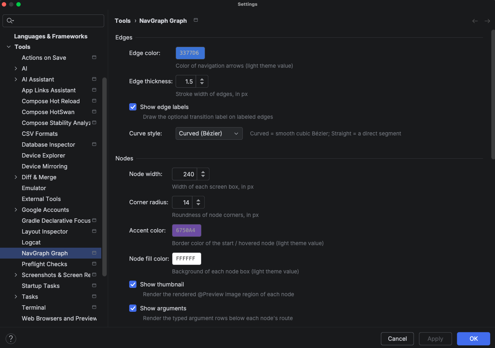

Settings¶
Everything about how the NavGraph Graph tool window draws and behaves can be tuned under
Settings > Tools > NavGraph Graph. Settings are stored per project in the workspace file, so they
never pollute a shared .idea checkout, and applying them repaints an open tool window live, with no restart or
refresh needed.

Edges¶
How the transition arrows between screens are drawn.
| Setting | Default | What it does |
|---|---|---|
| Edge color | 3377D6 |
Color of navigation arrows (the light theme value; the dark variant is derived) |
| Edge thickness | 1.5 |
Stroke width of edges, in px (0.5 to 6.0) |
| Show edge labels | on | Draw the optional transition label (from @NavEdge(label = ...)) on labeled edges |
| Curve style | Curved (Bézier) | Curved draws a smooth cubic Bézier; Straight draws a direct segment |
Nodes¶
How each destination box looks.
| Setting | Default | What it does |
|---|---|---|
| Node width | 240 |
Width of each screen box, in px (160 to 400) |
| Corner radius | 14 |
Roundness of node corners, in px (0 to 24) |
| Accent color | 6750A4 |
Border color of the start / hovered node (light theme value) |
| Node fill color | FFFFFF |
Background of each node box (light theme value) |
| Show thumbnail | on | Render the @Preview image region of each node |
| Show arguments | on | Render the typed argument rows below each node's route |
| Emphasize start destination | on | Give the start node the accent border and a ★ glyph |
Turning Show thumbnail and Show arguments off gives you a dense, structure only layout, which is useful for very large graphs where you care about the shape of the flow more than the screen contents.
Layout¶
How nodes are arranged on the canvas.
| Setting | Default | What it does |
|---|---|---|
| Column gap | 90 |
Horizontal spacing between depth columns, in px (40 to 200) |
| Row gap | 26 |
Vertical spacing between stacked nodes, in px (8 to 80) |
| Direction | Left to right | The axis the graph flows along: Left to right or Top to bottom |
| Auto-fit | On first load | When the view auto-zooms to frame the whole graph: On first load, On every refresh, or Never |
Theme¶
| Setting | Default | What it does |
|---|---|---|
| Theme mode | Follow IDE | Follow IDE swaps light/dark with your IDE theme; Always light / Always dark pin it |
| Background color | FBFCFE |
Canvas background (light theme value) |
All color settings store the light theme value; the plugin derives a matching dark variant automatically when the dark palette is active.
Behavior¶
| Setting | Default | What it does |
|---|---|---|
| Refresh action | Run generateNavGraph | Whether Refresh regenerates the graph via Gradle (Run generateNavGraph) or just reloads the last output (Reload existing files) |
| Double-click | Navigate to source | What double clicking a node does: Navigate to source or Do nothing |
Export¶
Defaults used by the tool window's Export… action. See NavGraph Graph for the export flow itself.
| Setting | Default | What it does |
|---|---|---|
| Default export device | empty (Auto) | Device label for the HTML export; empty means Auto, using the device the canvas currently shows |
| Export output directory | empty | Directory for the exported HTML; empty means the project base path |
| Export file name | nav-graph.html |
File name of the exported HTML |